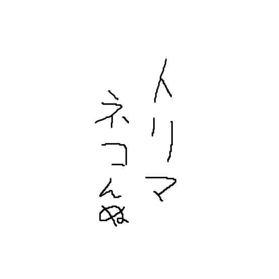

CoC(クトゥルフ神話)・エモクロアTRPGの魅力を説明すると同時に私が好きなシナリオを皆様に知っていただきたいがために作成しました。 TRPGについてあまり知らない方はヘッダーまたはフッターの「TRPGとは」を、よく知っていてシナリオだけ知りたい方は「シナリオ」を押してください。
このサイトについて
自己紹介

鳥舞ネコんぬ
TRPG見る専6年
プレイヤー歴2か月
シナリオ内でキャラクターの心情が揺れ動くシナリオが好き